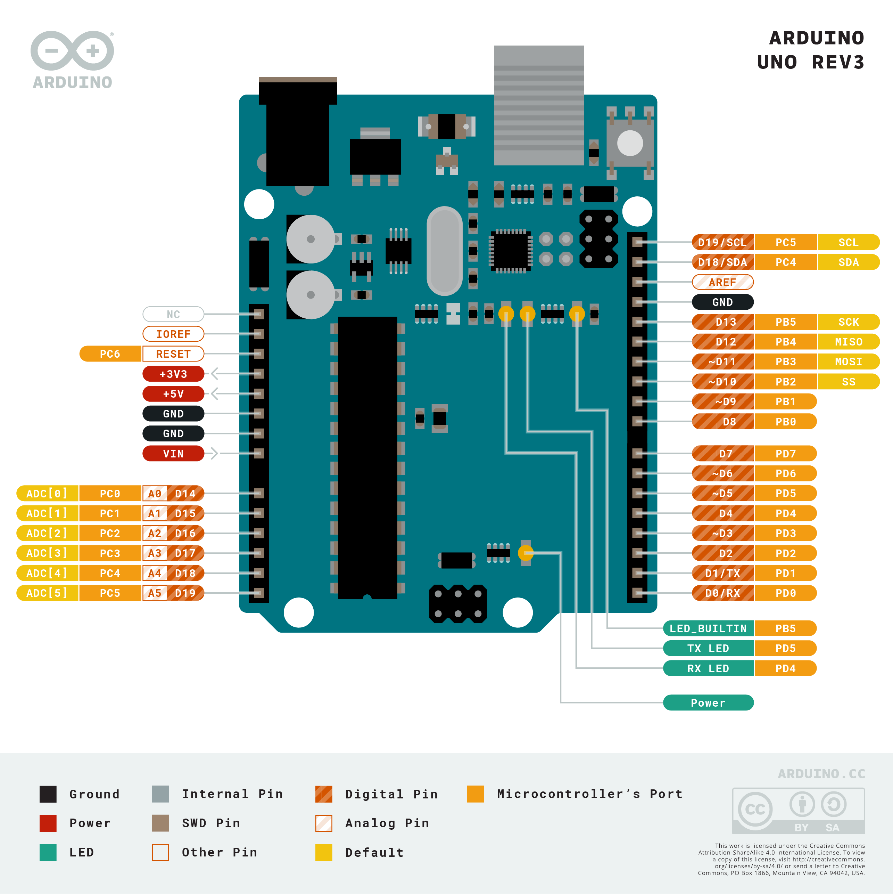
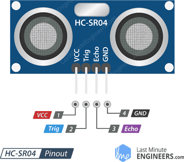

Ardunio Uno
The Ardunio Uno is one of the easiest microcontrollers to use (and is why the microncontroller of choice for most beginners). It has 14 digital input/output pins (6 of which can be used as PWM outputs), and 6 analog inputs. It is easily programmable with the Ardunio IDE via a USB cable or 9V battery. I will be using a few of the digital pins for the motor driver and ultrasonic sensor and the power and ground pins for my circuit.
Arduino Uno Pinout


HC-SR04 Ultrasonic Sensor
The only type of ultrasonic range sensor that I could find in the lab was the Arduino HC-SR04 (Ultra-sonic "ping" senosr), which easily connected to the Ardunio Uno which were plenty on hand. Ultrasound waves are high-pitched sound waves whose frequencies are beyond the audible limit of human hearing. This sensor is composed of two ultrasonic transducers -- one that trasmits the converted electrical signal to utrasound waves and one that receives the transmitted pulses, producing an output proportional to the distance the pulse travelled.
L298 Motor Driver Pinout

L298 Motor Driver Module
With most microncontrollers like the Arduino, driving an LED is no problem since the current draw is so low (about 20 mA). Driving a DC motor, however, requires a lot of current (the motor I will be using has no-load current of 70mA). This is where motor drivers come in. This motor driver has an H-bridge which allows for direction control and another source of power supply that is sufficient to drive the 6V motor (the Uno can only output a maximum of 5V). The driver has four inputs, but since I will be using only one motor, I will only be needing two of these.
L298 Motor Driver Pinout